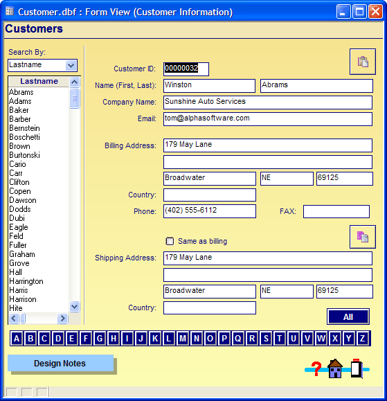
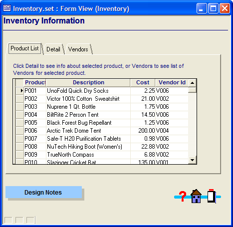
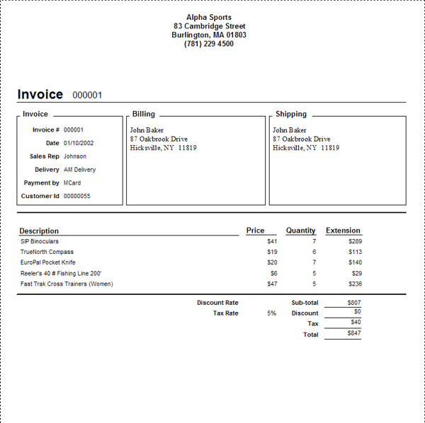

Layouts
Alpha Anywhere supports five types of layouts:
Forms
Browses
Reports
Letters
Labels
The first two, browses and forms, let you view, enter, change, and delete data. The others (reports, letters, and labels) let you print data in a variety of physical and file formats.
Forms and browses are both displays of table data in which you can enter and edit information. You can think of forms and browses as table information layouts. Data is stored in tables, but forms and browses let you view and edit table data. Browses and forms present table or set data in two different ways.
A browse displays data in a tabular format, letting you view multiple records simultaneously. Each row represents an individual record, and each column represents an individual field.

Browse View
A form typically displays one record at a time. You can arrange and combine fields with pictures or other design elements to create an aesthetically pleasing and efficient data entry window. Picture
{kind=link}

Form View
Forms can also include embedded browses that display multiple records from related tables. With an embedded browse, the form displays both a single record from one table and multiple records from other, related tables.

A Tabbed Form with an Embedded Browse
If you work with others on a network, data displayed in a form or browse is updated (or refreshed) at user-specified intervals as Data changes. For example, if you are viewing an invoice containing the quantity of a product in inventory and another user reduces this quantity, when the form window refreshes, the inventory quantity changes accordingly.
Lettersand_Labels>Reports, Letters, and Labels
Alpha Anywhere helps you to generate professional-looking layouts with your data. Reports, Letters, and Labels give you the flexibility to perform many common printing tasks.
For example, you want to send an updated price list with a cover letter to all your major clients. You could generate the price list as a report, merge the cover letter with your client data to personally address each client, and print a mail label for each envelope.
Reports are powerful tools that organize, select, sort, format, and insert data into professional-looking documents. A typical report might create a simple list of selected records (like a membership list or a list of subscribers) categorized by state and zip code. More complex Reports might summarize yearly sales or print itemized invoices.

An Invoice Report
See Also